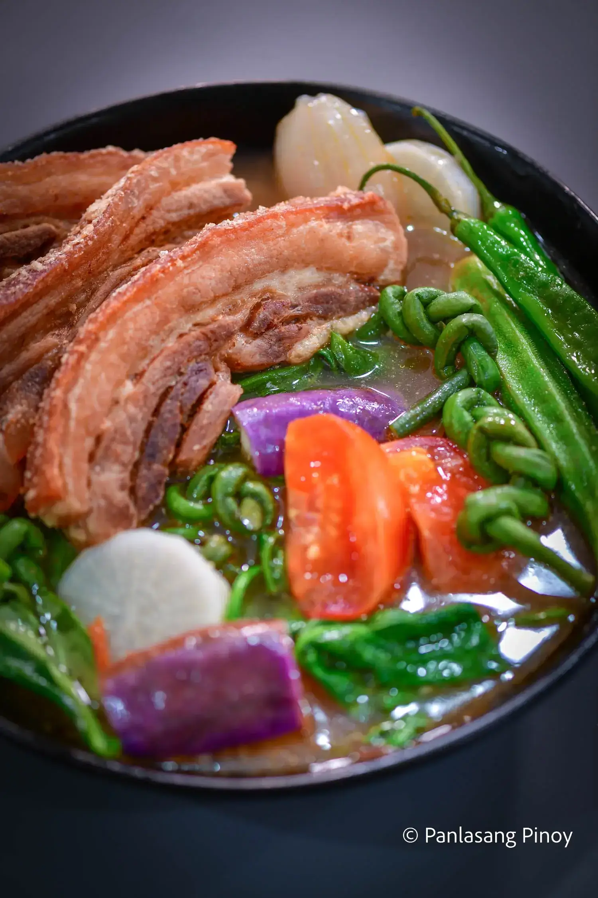
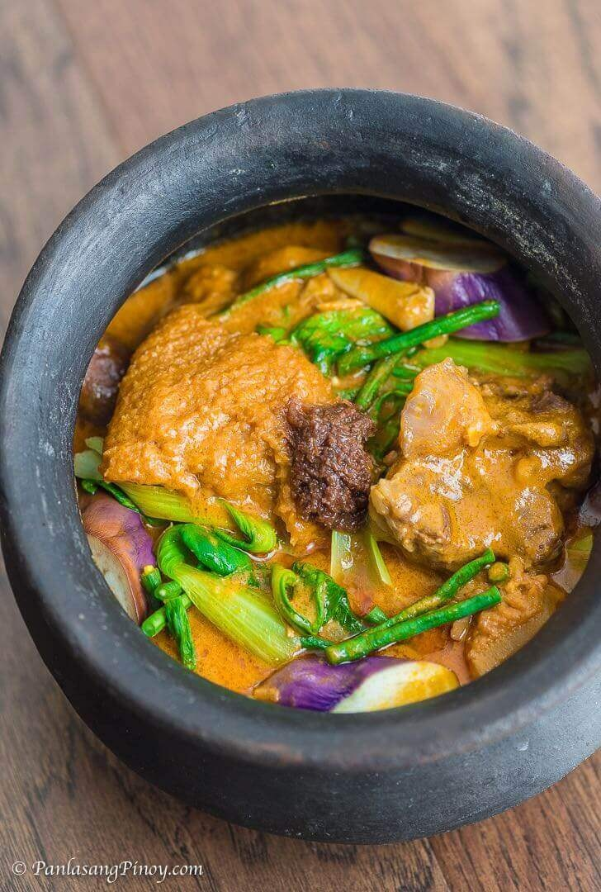

Top Pinoy Dishes
Chicken Adobo
Chicken Adobo is an authentic Filipino dish and is one of the mostly recognized Filipino foods. Not to be mistaken with Mexican adobo, this dish is uniquely prepared by stewing chicken in vinegar and soy sauce.
Sinigang
Sinigang is a Filipino soup or stew characterized by its sour and savory taste. It is most often associated with tamarind (Filipino: sampalok), although it can use other sour fruits and leaves as the souring agent. It is one of the more popular dishes in Filipino cuisine.
Kare-Kare
Kare-kare is a Philippine stew (kare derives from "curry") that features a thick savory peanut sauce. It is generally made from a base of stewed oxtail, beef tripe, pork hocks, calves' feet, pig's feet or trotters, various cuts of pork, beef stew meat, and occasionally offal.
Utan Bisaya
Utan bisaya is a simple Filipino vegetable dish that is composed of a variety of veggies. The vegetables are boiled in water and sometimes fish is added. It has a close similarity with other Philippine regional dishes such as dinengdeng or inabraw (Ilocos region), bulanglang (CALABARZON), and laswa ( Western Visayas)
Chicken Adobo Ingredients
- 2 1/2 lbs. chicken cut into serving pieces
- 1 piece Knorr Chicken cube
- 2 cups lemon lime soda
- 1/4 cup soy sauce
- 1/2 cup white vinegar
- 5 pieces dried bay leaves
- 1 head garlic
- 2 teaspoons whole peppercorn
- 3 tablespoons cooking oil
Instructions
- Combine chicken, soy sauce, and 1 cup lemon lime soda. Mix. Marinate for at least 30 minutes.
- Heat oil in a pan. Pan-fry marinated chicken for 1 minute per side. Remove from the pan. Set aside.
- Using the remaining oil, sauté garlic until it browns. Put the pan-fried chicken back into the pan. Add remaining marinade, lemon lime soda, whole peppercorn, and dried bay leaves. Let boil.
- Pour-in vinegar. Let the mixture boil. Stir.
- Add Knorr Chicken Cube. Cover and reduce heat between low to medium. Cook for 20 minutes.
- Remove the cover of the pan. Adjust heat to medium. Continue cooking while stirring every few minutes until the sauce evaporates.
- Transfer to a serving plate. Serve. Share and enjoy!
Sinigang Ingredients
- 2 lbs pork belly or buto-buto
- 1 bunch spinach or kang-kong
- 3 tablespoons fish sauce
- 12 pieces string beans sitaw, cut in 2 inch length
- 2 pieces tomato quartered
- 3 pieces chili or banana pepper
- 1 tablespoons cooking oil
- 2 quarts water
- 1 piece onion sliced
- 2 pieces taro gabi, quartered
- 1 pack sinigang mix good for 2 liters water
Instructions
- Heat the pot and put-in the cooking oil
- Sauté the onion until its layers separate from each other
- Add the pork belly and cook until outer part turns light brown
- Put-in the fish sauce and mix with the ingredients
- Pour the water and bring to a boil
- Add the taro and tomatoes then simmer for 40 minutes or until pork is tender
- Put-in the sinigang mix and chili
- Add the string beans (and other vegetables if there are any) and simmer for 5 to 8 minutes
- Put-in the spinach, turn off the heat, and cover the pot. Let the spinach cook using the remaining heat in the pot.
- Serve hot. Share and enjoy!
Kare Kare Ingredients
- 1 1/2 lb. ox tail
- 1 lb beef tripe
- 1 piece Knorr Beef Cube
- 1 bunch pechay
- 1 piece talong sliced
- 12 pieces sitaw cut into 2 inch pieces
- 1 cup sliced banana blossoms
- 3/4 cup peanut butter
- 1/2 cup annatto seeds
- 1/4 cup bagoong alamang
- 1 teaspoon cornstarch
- 1 piece yellow onion
- 4 cloves garlic crushed
- 3 tablespoons cooking oil
- 2 quarts water
Instructions
- Boil 1 quart water in a pressure cooker. Add oxtail and tripe. Continue to boil in medium heat for 20 minutes. Note: do not cover the cooker.
- Drain the water use to boil the beef. Pour 1 quart of fresh water into the pressure cooker. Cover and pressure cook for 25 minutes.
- Prepare annatto water by combining 1 cup of hot water with annatto seeds. Stir. Soak seeds for 10 minutes. Remove the seeds by filtering using a kitchen sieve. Set aside.
- Heat oil in a cooking pot. Saute onion and garlic until onion softens.
- Pour beef stock into the pot. Note: this is the liquid used to pressure cook the oxtail and tripe. Let boil.
- Add peanut butter. Stir until well blended.
- Add Knorr Beef Cube. Stir.
- Pour annatto water into the pot and then add oxtail and beef tripe. Let the mixture re-boil. Cook for 5 to 7 minutes.
- Combine cornstarch with 1/4 cup water. Stir. Pour mixture into the cooking pot. Stir.
- Add eggplant, banana blossom, and sitaw. Cook for 5 minutes.
- Add pechay. Cover the pot and cook for 3 to 4 minutes.
- Transfer to a serving bowl. Serve!
Utan Bisaya Ingredients
- 3/4 lb squash
- 2 pieces taro
- 1 piece Knorr Shrimp Cube
- 4 thumbs ginger
- 2 stalks lemongrass
- 1 piece Chinese eggplant sliced
- 10 pieces string beans cut in 2 inch pieces
- 12 pieces okra
- 2 cups spinach
- 3 1/2 cups water
- Salt and ground black pepper to taste
Instructions
- Boil water in a cooking pot. Add lemongrass and ginger. Cook for 5 minutes.
- Add taro and squash. Cover and continue boiling for 5 to 7 minutes.
- Remove lemongrass from the pot. Add okra, string beans, and eggplant. Stir. Cover and continue cooking for 7 minutes.
- Add Knorr Shrimp Cube. Stir and cook for 3 minutes.
- Add spinach. Cook for 2 minutes.
- Season with salt and ground black pepper.
- Transfer to a serving bowl. Serve.
- Share and enjoy!